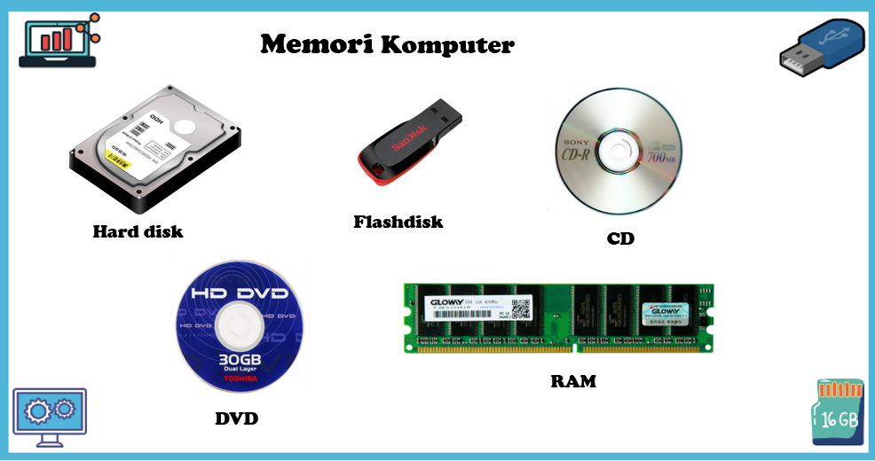
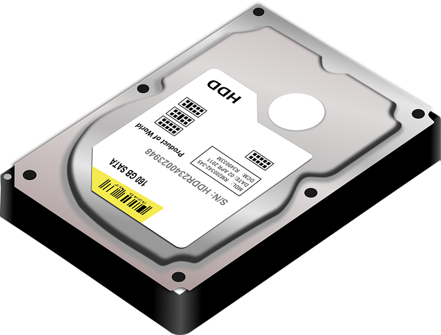
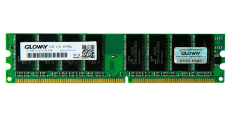

Pengertian Memori
Memori berarti ingatan. Dalam fungsi sebagai komponen komputer, memori adalah media penyimpanan data dan informasi. Berdasarkan metode penyimpanannya, komputer memiliki dua jenis memori, yaitu :
- Memori primer, menyimpan data secara sementara (volatil). Jika aliran listrik mati, data akan hilang.
- Memori sekunder, menyimpan data secara tetap. Kategori memori sekunder dapat dilihat pada komponen-komponen seperti hard disk, flash disk, CD, DVD, microSD, chip, floppy disk, dan lainnya.
Beberapa perangkat memori komputer yang sering ditemui sehari-hari ditunjukkan pada gambar berikut.

Gambar 1. Beberapa perangkat memori yang sering ditemui
Hirarki Memori
Hirarki memori adalah sebuah konsep yang digunakan untuk menyetarakan kapasitas, waktu akses, dan harga memori untuk tiap bitnya.
- Onboard Memory Onboard memory adalah memori dalam mainboard komputer yang sudah terintegrasi dan dapat secara langsung diakses oleh processor. Ada tiga jenis onboard memory yaitu Register memory terletak dalam processor dan berfungsi membantu proses aritma dan logika dalam CPU, Cache memory (merupakan memori yang digunakan untuk mempercepat transfer data dari memori utama ke processor), dan memori utama (terletak di luar processor berfungsi untuk menyimpan data dan instruksi program).
Video 1. Hirarki Memori
Mari Berlatih
Setelah menonton video penjelasan materi diatas, marilah kita berlatih dengan menjawab pertanyaan berikut.
Mari Berlatih
Berikut ini terdapat beberapa perangkat memori yang sering kita temukan dalam kehidupan sehari-hari.
Isilah kotak-kotak berikut sesuai dengan nama perangkat memori pada gambar.
Isilah kotak-kotak berikut sesuai dengan nama perangkat memori pada gambar.
 |
 |  |
Mari Berlatih
 pada kolom memori atau pada kolom memori
pada kolom memori atau pada kolom memori